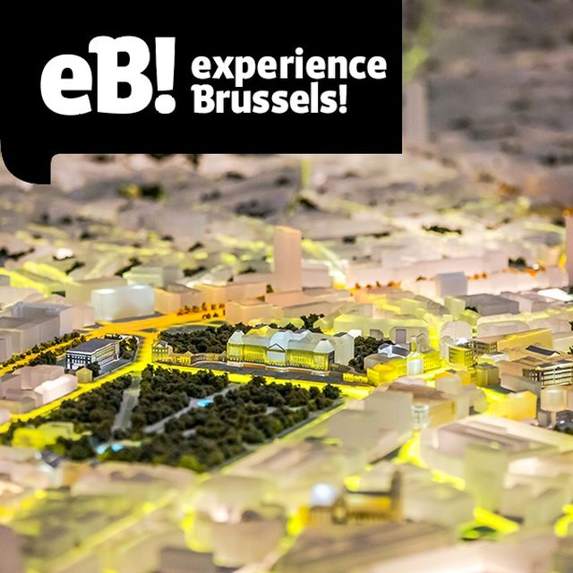
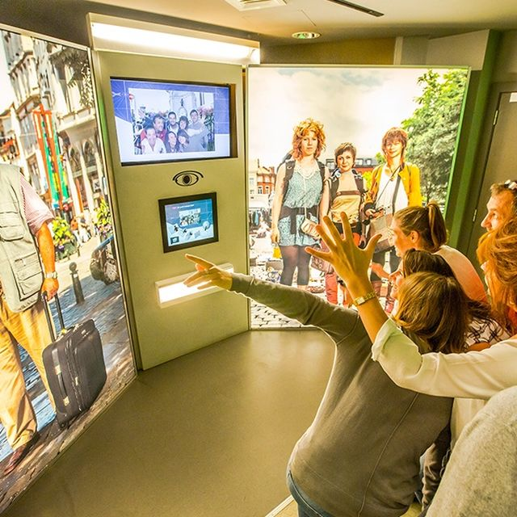

experience Brussels!
C’est l’endroit où nous avons un visu global de la Région Bruxelles-Capitale, c’est le lieu qu’une personne devrait visiter.
C’est un endroit où vous pouvez comprendre la région de Bruxelles-Capitale, toutes ses mixités dans un joyau du 18e siècle.
Le bâtiment est du style néoclassique, l’un des derniers vestiges de l’occupation Française.
Dans ce lieu, on est mis au défi dans une exposition moderne et interactive. Avec des Quiz qui abordent des thèmes variés comme la géographie, l’histoire, l’environnement, les institutions de Bruxelles ainsi qu’européennes, les monuments et les symboles.
C’est un lieu chaleureux, cosy et accueillant : un lieu à découvrir. Que nous soyons Belge ou visiteur, seul ou en famille, petit ou grand, le but est de trouver toutes les réponses dans un seul lieu pour comprendre cette région de Bruxelles-Capitale aux mille facettes.
